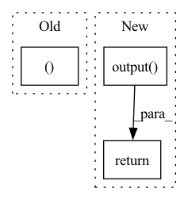

Pattern ID :26312

Before Change
[params.output],
params.blank_id,
)
return hyps, scores
def compute_objectives(self, predictions, targets, stage="train"):
ids, phns, phn_lens = targets
After Change
TN_output.unsqueeze(2), PN_output.unsqueeze(1),
)
// projection layer
outputs = self.modules.output(joint)
outputs = self.hparams.log_softmax(outputs)
if stage == sb.Stage.TRAIN:
return outputs, lens
else:
hyps, scores = transducer_greedy_decode(
TN_output,
[self.modules.emb, self.modules.dec, self.modules.dec_lin],
self.modules.Tjoint,
[self.modules.output],
self.hparams.blank_id,
)
return outputs, lens, hyps
def compute_objectives(self, predictions, targets, stage):
ids, phns, phn_lens = targets
In pattern: SUPERPATTERN
Frequency: 3
Non-data size: 3
Instances
Fragment ID: 79066423
Project Name: speechbrain/speechbrain
Commit Name: 6f252e43bf5eaabf7c9f5fc881571c72c09321d5
Time: 2020-11-02
Author: a.heba@irit.fr
File Name: recipes/minimal_examples/neural_networks/ASR_Transducer/example_asr_transducer_experiment.py
M Class Name: TransducerBrain
N Class Name: TransducerBrain
M Method Name: compute_forward(4)
N Method Name: compute_forward(5)
M Parent Class: sb.Brain
N Parent Class: sb.core.Brain
M File Name: recipes/minimal_examples/neural_networks/ASR_Transducer/example_asr_transducer_experiment.py
N File Name: recipes/minimal_examples/neural_networks/ASR_Transducer/example_asr_transducer_experiment.py
M Start Line: 22
M End Line: 68
N Start Line: 11
N End Line: 45
'>
Before Change
return torch.sigmoid(self.fc4(h3))
def forward(self, x):
mu, logvar = self.encode(x.view(-1, 784))
z = self.reparameterize(mu, logvar)
return self.decode(z), mu, logvar
After Change
z = self.reparameterize(mu, logvar)
else:
z = mu
output = self.output(self.decoder(z))
return output, mu, logvar
'>
Fragment ID: 79066420
Project Name: deeperlearner/pytorch-template
Commit Name: 576d9f329d45ddf4af2b320655eb909c48d5cb34
Time: 2020-11-24
Author: b04202035@g.ntu.edu.tw
File Name: model/VAE.py
M Class Name: VAE
N Class Name: VAE
M Method Name: forward(2)
N Method Name: forward(2)
M Parent Class: nn.Module
N Parent Class: nn.Module
M File Name: model/VAE.py
N File Name: model/VAE.py
M Start Line: 30
M End Line: 32
N Start Line: 52
N End Line: 60
'>
Before Change
// Second Transformer
for conv in self.layers:
h, e = conv(g, h, e)
g.ndata["h"] = h
if self.readout == "sum":
After Change
readouts_to_cat = [dgl.readout_nodes(g, "f", op=aggr) for aggr in self.readout_aggregators]
readout = torch.cat(readouts_to_cat, dim=-1)
return self.output(readout)
class SAN_NodeLPE(nn.Module):
def __init__(self, node_dim, edge_dim, batch_norm_momentum, residual, in_feat_dropout, dropout,
'>
Fragment ID: 79066421
Project Name: hannesstark/3dinfomax
Commit Name: 934d8fb3ef28cbe5340fd6a305e55c7130a16966
Time: 2021-06-12
Author: hannes.staerk@gmail.com
File Name: models/san.py
M Class Name: SAN
N Class Name: SAN
M Method Name: forward(2)
N Method Name: forward(4)
M Parent Class: nn.Module
N Parent Class: nn.Module
M File Name: models/san.py
N File Name: models/san.py
M Start Line: 297
M End Line: 320
N Start Line: 270
N End Line: 274